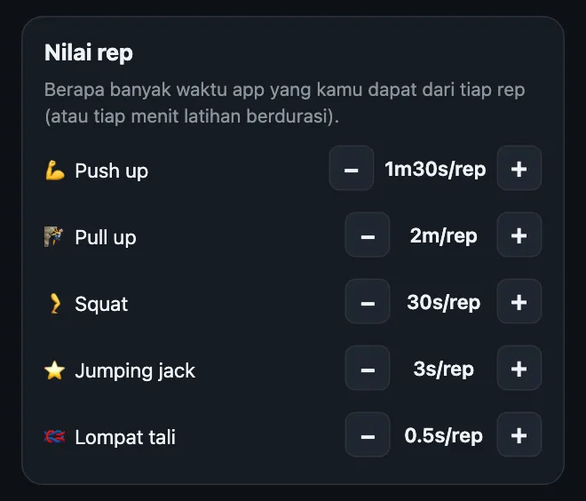

Berapa screen time yang pantas untuk satu push up?
Halo semuanya! Di HonorFit, setiap rep yang kamu catat membeli waktu app, dan kamu sendiri yang menentukan harganya. Itu pertanyaan yang paling sering aku dapat setelah orang selesai mengatur aplikasinya: satu push up pantasnya bernilai berapa? Satu menit? Sepuluh detik? Begini caraku memikirkannya.
Nilai default
Kalau kamu tidak mengubah apa-apa, ini yang kamu dapat:
| Latihan | Nilai default |
|---|---|
| 💪 Push up | 1 menit per rep |
| 🧗 Pull up | 1m30s per rep |
| 🔥 Sit up, 🦵 Squat | 30 detik per rep |
| Latihan apa pun yang kamu tambahkan | 30 detik per rep |
| Latihan berdurasi (jalan kaki, yoga, HIIT) | 30 detik per menit |
| Latihan jarak | 5 menit per km, atau 8 per mil |
| 👟 Langkah | 3 menit per 1.000 langkah |
Jadi 20 push up sama dengan 20 menit Instagram. Untuk banyak orang, itu sudah pas sebagai awal. Untuk yang lain, itu terlalu murah hati atau malah terlalu pelit. Kamu yang mana?
Cara memilih dalam satu baris
Pikirkan dua angka:
- Berapa lama waktu di aplikasi yang diblokir yang terasa wajar di hari biasa? Jujur saja, jangan yang idealnya.
- Berapa rep yang benar-benar akan kamu lakukan untuk itu, dibagi sepanjang hari?
Lalu bagi: nilai per rep = waktu ÷ rep. Mau sejam TikTok untuk 60 push up? 1 menit per rep. Mau sejam yang sama tapi kamu sanggupnya 120 squat? 30 detik per squat. Sebenarnya cuma itu.
Kalau jawaban untuk angka kedua adalah “tidak banyak”, itu juga tidak apa-apa. Beri harga rep yang tinggi, dan pakai Jatah harian (Pengaturan, gratis) supaya setiap hari dimulai dengan sedikit waktu yang sudah tersimpan.
Beberapa pengaturan yang bisa ditiru
| Latihan | Tiap rep dapat | Hasil satu set |
|---|---|---|
| Push up (pemula) | 1m30s | 10 push up = 15 menit |
| Push up (sudah lama rutin) | 30 detik | 40 push up = 20 menit |
| Jumping jack | 3 detik | 100 jumping jack = 5 menit |
| Lompat tali (per lompatan) | 0,5 detik | 600 lompatan = 5 menit |
| Pull up | 2 menit | 5 pull up = 10 menit |
| Lari (jarak) | 6 menit per km | lari 5K = 30 menit |
Polanya: makin gampang dan cepat satu rep, makin kecil nilainya. Satu jumping jack cuma butuh sekitar satu detik, jadi nilainya tidak boleh sama dengan satu pull up.
Tombol pengatur jadi lebih halus di 1.18.0
Sampai baru-baru ini, nilai terkecilnya 5 detik, jadi rep yang super cepat (lompat tali, jumping jack) susah diberi harga, dan naik dari 3 menit ke 10 menit butuh waktu lama sekali. Seorang pengguna mengirim email soal keduanya, jadi di 1.18.0 tombol −/+ mengikuti tangga yang lebih pintar:
- Di bawah 5 detik: 4, 3, 2, dan 1 detik, lalu 0,5, 0,25, dan 0,1 detik.
- 5 detik sampai 1 menit: naik per 5 detik.
- 1 sampai 3 menit: naik per 15 detik.
- 3 sampai 10 menit: naik per 30 detik.
- Di atas 10 menit: naik per 1 menit.
Kamu bisa menemukannya di dua tempat:
- Pengaturan → Nilai rep: satu baris −/+ untuk tiap latihan. Paling cepat kalau kamu cuma mau mengubah harga.
- Pengaturan → Latihan → Ubah: editor lengkapnya, tempat kamu juga bisa menambah, mengganti nama, dan menghapus latihan, serta berpindah antara rep, menit, dan jarak. Panduan lengkapnya ada di cara mengatur latihanmu sendiri.

Tanda-tanda harganya salah
- Kamu kedapatan mencatat rep yang tidak kamu lakukan. Waktumu terlalu mahal. Itu sistem kejujuran yang sedang memberi tahu sesuatu. Naikkan nilainya selangkah demi selangkah sampai keinginan itu hilang.
- Saldomu tidak pernah habis. Waktumu terlalu murah. Turunkan nilainya satu atau dua langkah, atau blokir satu aplikasi lagi.
- Kamu melakukan rep-nya tapi kesal. Mungkin latihannya yang salah, bukan harganya. Ganti dengan sesuatu yang tidak kamu benci. Jalan kaki juga dihitung. Begitu juga gerakan yang lebih ringan.
- Kamu menimbun berjam-jam lalu menghabiskan semuanya di malam hari. Nyalakan Reset tengah malam (gratis) supaya waktu yang tidak terpakai tidak menumpuk.
Beri pengaturan baru waktu sekitar seminggu sebelum kamu mengubahnya lagi. Dua hari pertama memang selalu terasa aneh.
Mode sulit dan mode sakit
Untuk hari-hari yang tidak cocok dengan pengaturan biasamu, ada tombol 💀 Mode sulit yang bisa kamu pasang di header layar utama (Pengaturan → Mode sulit & sakit, gratis). Ketuk sekali dan tiap rep cuma dapat setengahnya. Ketuk lagi untuk 🤒 mode sakit, di mana tiap rep dapat dua kali lipat, untuk saat kamu sedang kurang sehat. Ketuk sekali lagi untuk kembali normal. Nilai aslimu tidak pernah berubah, jadi tidak ada yang perlu dikembalikan.
Aku bukan pelatih: aku yang membuat aplikasinya, bukan coach. Kalau suatu latihan terasa sakit, berhenti, dan kalau kamu punya cedera atau kondisi kesehatan tertentu, tanyakan ke orang yang paham tubuhmu apa yang tepat untukmu. Lalu atur HonorFit menyesuaikan itu.
HonorFit Blocker adalah aplikasi blokir gratis untuk iPhone dan Android. Kamu yang memilih latihannya dan berapa nilainya. Sistem kejujuran, tanpa kamera, tidak ada yang keluar dari HP-mu.